In this second part of the GMF Tutorial, some of the more advanced capabilities of the generation and runtime frameworks will be explored. Specifically, information on adding compartments, connections, feature initializers, diagram validation, and nested child nodes will be covered. The complete solution to this tutorial is maintained in CVS here. Viewlets will be available after appropriate sections below to focus their content and keep them short. (warning: they are outdated)
Important note: If you previously followed this tutorial with GMF 1.0, you'll need to be aware of changes in the graphical definition model described here.
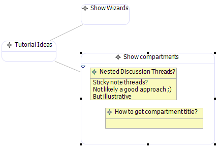
Let's add a compartment to our Topic node to allow discussion threads to be added. In order to illustrate how to allow nodes within compartments, we will represent Thread items as yellow sticky notes and allow ThreadItem elements to appear as list items within them. So, we will have nodes with a compartment list nested within a parent node compartment. A preview of where we're going is seen to the right. And yes, it's a bit contrived, but it does give us an opportunity to describe a lot of features in one section.
Some of the steps in this section are a bit complex, so the viewlet should prove helpful in getting things right.
Tip : Be careful when working with multiple models, as until there is true refactoring support, you will need to be conscious of changes in definition models and how they will impact referenced models, such as our mapping model. Editing models open in the same resource set will help, so you might consider making changes to your graphical and tooling models from within the open mapping model. Otherwise, you'll receive errors when opening the editors and will need to repair broken references in a text editor.
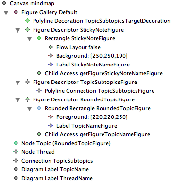
Open up your graphical definition again and let's first take care of giving our Topics a rounded rectangle. Right-click the Figure Gallery and add a new Figure Descriptor and child Rounded Rectangle, naming them both RoundedTopicFigure. Adjust the Corner Width and Height property values to 12 (or whatever you'd like). To alter the default line color, right-click on the Rounded Rectangle RoundedTopicFigure and add a new Child | Foreground Color RGB Color with R=220, G=220, B=250 (or whatever you'd like).
We'll reuse the old TopicFigure rectangle for our sticky note. Rename it and its Figure Descriptor to StickyNoteFigure and give it a Background Color RGB Color child with values R=250, G=250, B=190 (a pale yellow, but feel free to change to suit your taste). Rename its child Label to StickyNoteNameFigure.
We'll need to create a child Label on our new Rounded Rectangle named TopicNameFigure, similar to the original Rectangle. You'll also need to create a Child Access element to your Figure Descriptor and select the new Label TopicNameFigure as its Figure. The Accessor property will default to 'getFigureTopicNameFigure' automatically. See the link above regarding changes to the graphical definition model if you're confused by the Child Access and Figure Descriptor changes that took place during the 2.0 release cycle.
Now, you'll need to change the Diagram Label TopicName to use this new Label TopicNameFigure as its Figure (it should still be pointing to the now-renamed StickyNoteFigure) and change the Accessor to the 'getFigureTopicNameFigure' child access. Then, just change the Figure property on your Node Topic element to use the Rounded Rectangle RoundedTopicFigure.
Create a new Node on the Canvas to use your StickyNoteFigure and name it Thread, along with a new Diagram Label named ThreadName that uses your StickyNoteFigure and 'getFigureStickyNoteNameFigure' accessor. Select 'true' for the Element Icon property of the label.
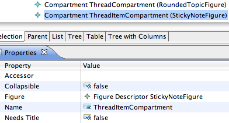
As we'd like to have discussion threads within a compartment of our topic nodes, we'll need to add one to our Canvas by right-clicking and selecting New Child | Compartment. Give it the name ThreadCompartment and select RoundedTopicFigure for its Figure property. Select 'true' for its Collapsible property and 'false' for its Needs Title property.
We'd also like to give threads their own compartment to contain a list of thread items for the subject. Create another compartment for our Thread node named ThreadItemCompartment which will use StickyNoteFigure as its Figure. So, our topics will be rounded rectangles which will contain child rectangles within a compartment. These child rectangles will also have a compartment, but they will not contain rectangles, but rather, just a simple list of discussion threads. These will be represented with a Label.
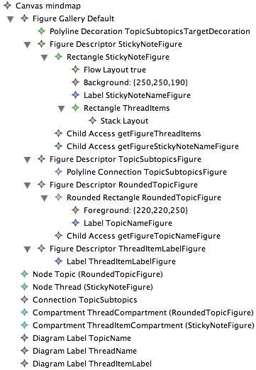
While they will be represented as a series of labels, there are some things we need to ensure they are displayed correctly within the parent StickyNoteFigure rectangle. First, select the Flow Layout child of the parent and modify its properties to match the figure to the left.
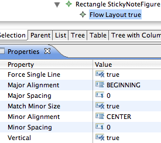
As you can see, we're going to force a single line of vertically-oriented children. The Major Alignment (vertical) is set to BEGINNING, while the minor (horizontal) is set to CENTER. We're going to set spacings to 0 and set Match Minor Size to 'true' as well. Now, we'll need a new child Rectangle element named ThreadItems and give it a Stack layout. Finally, the parent StickyNoteFigure Figure Descriptor will need a Child Access to access this rectangle and its labels. Create a new Child Access and set its Figure to the ThreadItems rectangle.
Add a new FigureDescriptor and Label to the Figure Gallery for our thread items named ThreadItemLabelFigure. Create a Diagram Label to the Canvas named ThreadItemLabel and assign the ThreadItemLabelFigure as its Figure property.
In summary, you should now have two nodes, one connection, two compartments, and three diagram labels as shown in the figure. These correspond to the rectangles, our polyline connection, and labels in the Figure Gallery.
Note : In the future, graphical definitions will be done using a designer bootstrapped by GMF itself. The figures you have created here will be done visually, rather than by manipulating a model using the generated EMF editor. To test drive this editor, download and install the "Experimental SDK" from the download site and provide feedback on the newsgroup.
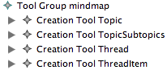
We'll need a tool to add Thread nodes and ThreadItems, so open mindmap.gmftool and copy/paste the Topic tool and rename Thread. Repeat for a ThreadItem tool. Next, we'll need to complete our mappings, so reopen your mindmap.gmfmap file (if you're not already working within the mapping model editor, as recommended).
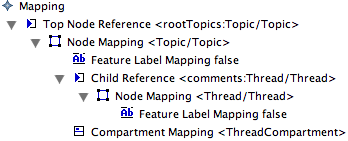
First, we'll need to add a new Compartment Mapping to our Topic Node Mapping and select ThreadCompartment for its Compartment property. Also, add a Child Reference to the Node Mapping. In the properties, select 'comments : Thread' for its Containment Feature and Compartment Mapping
Note : If you're wondering about the difference between 'Children Feature' and 'Containment Feature' the idea is this (as described in the [news://news.eclipse.org:119/e2j1il$j0a$1@utils.eclipse.org newsgroup]): the 'Containment Feature' refers to where children are stored, while the 'Children Feature' refers to where to take them from. These are usually the same, and there is no need to set Children Feature if Containment Feature is set as it will default to this value. An example of when you'd need to specify this property is with EClass and EAttribute where eStructuralFeatures is the 'containment' for both operations and attributes, but where eAttributes is 'children' for instances of EAttribute.
Right now, the node that represents our topic has a compartment with a reference to the domain element which will contain its contents. The contents of this compartment we have decided will be thread discussions, which are represented by yellow sticky notes. To represent this in our mapping, add a Node Mapping to our Child Reference. In the properties, select our Thread class for the domain Element, our Thread node for the Diagram Node, and our Thread creation tool from the palette.
The last thing we'll need for our child thread node is a mapping to its label. To our Thread Node mapping, add a child Feature Label Mapping. Select our ThreadName for the Diagram Label and the 'subject : String' feature from our Thread class for the label's Feature property.
At this point, you can regenerate the generator model and diagram plugin to see how things look. Let's continue on and map our thread node compartment to display thread items.
Tip : In the generator model, you will find a property on the compartment that will allow you to show children as 'floating' nodes and not stacked in a list. The property is 'List Layout' and should be set to 'false' in this case.
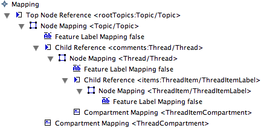
We will basically repeat the steps above to add a Compartment Mapping for our ThreadItemCompartment. Add a Child Reference for our 'items : ThreadItem' feature on our Thread class and select ThreadItemCompartment for its Compartment.
To our Child Reference, add a child Node Mapping for our ThreadItem class with corresponding ThreadItemLabel as the Diagram Node and ThreadItem tool. Finally, add a Feature Label Mapping to the node for our ThreadItemLabel to display the 'body : String' feature of our ThreadItem class.
At this point, you can regenerate the mindmap.gmfgen model and diagram plugin code. You should be able to run the diagram and produce a diagram similar to the one shown at the beginning of this section.
Note : When making changes to your diagram definition and regenerating, you may not be able to open diagrams that were created with previously generated diagram code. This is to be expected, so it's best to start with a new diagram instance to test each iteration.
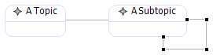
Currently, the diagram will allow you to make a subtopic link from one Topic to itself, as seen here. Clearly, this does not make sense for our Mindmap, so we'd like to prevent this somehow. This section makes for a very short viewlet.
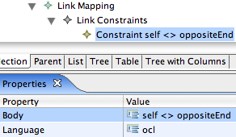
Let's return to our mapping definition, and to the 'Link Mapping' we created earlier. To add a constraint, we begin by right-clicking on the 'Link Mapping' and selecting 'New Child > Link Constraints'. To the Link Constraint, right-click and select 'New Child > Source End Constraint'. The 'Language' property defaults to 'ocl' and we'll need to add the following OCL statement to the 'Body' property: self <> oppositeEnd, as seen in the image below. Then, go through the usual regeneration of mindmap.gmfgen and diagram code and try it out. You will no longer be able to make a link from a Topic to itself.
So, now to explain what is happening here. As you can tell from the context above, we've added a constraint to the creation of a link, based on its source end; that is, the Topic element from which a link is being created. In the OCL we've specified the only condition that will evaluate to true, and therefore allow the link to be created, is the condition where the source element is not equal to the 'oppositeEnd' of the link (the target). In this case, the context of 'self' is the source Topic, and 'oppositeEnd' is a custom variable added to the parser environment for link constraints.
Clearly, this is a very simple constraint, and one that could very well have been defined in the domain model itself and respected by the graphical editor automatically. We will look more closely at constraints in future versions of this tutorial as support for their use matures.
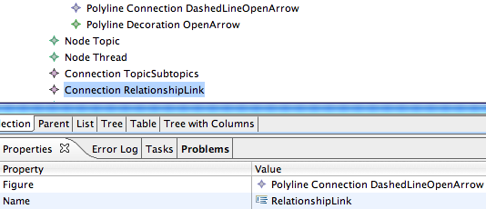
Let's look now at the 'Relationship' element of our domain model. It specifies a number of possible relationships that may be indicated between Topic elements, in addition to the subtopic relationship we have supported thus far. We will add support for this type of Connection, as it will illustrate more completely the properties available for a Link Mapping within GMF. A viewlet of this section can be found here.
Returning to our graphical definition model (mindmap.gmfgraph), let's right-click on our gallery and add a 'New Child > Figure Descriptor' and to it a 'New Child > Polyline Connection'. Name it 'DashedLineOpenArrow' and change 'Line Kind' to LINE_DASH. Then add a 'New Child > Polyline Decoration' element to the Figure Gallery and name it 'OpenArrow'. The default decoration will be an open arrow (while a Polygon Decoration will be a filled triangle), but if you want to make one explicitly, you could add three Template Point children to the OpenArrow with X:Y values of -1:1, 0:0, and -1:-1. Finally, add the OpenArrow as a Target Decoration to the DashedLineOpenArrow polyline.
Now that you have the figure defined, create a corresponding Connection on our Canvas named 'RelationshipLink', selecting our 'DashedLineOpenArrow' Figure Descriptor as its 'Figure'. Finally, we'd prefer to have subtopics just connected with a solid line (no arrow), so delete the Polyline Decoration TopicsSubtopicsTargetDecoration element from the Figure Gallery which was added by the wizard in part one.
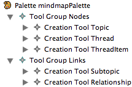
We'll need a tool to create these links, so reopen your mindmap.gmftool model. We already have one link tool for subtopics, but it's in the same tool group as our node elements. Let's create a new Tool Group under our Palette for links named 'Links' and add to it new Relationship Creation Tool. Copy/paste the TopicSubtopics tool into this new group and name it simply 'Subtopic'. Delete the old TopicSubtopics tool. Finally, rename the 'mindmap' tool group to 'Nodes'. Make both tool groups collapsible by setting their Collapsible to 'true'.
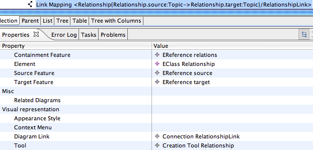
In the mapping definition, due to our changes in the tooling model, you'll need to check/update your existing tool selections. Right-clicking and running validation after a close/open of the mapping model can make it easier to spot invalid tool references. If you've been working with your graphical and tooling models from within the mapping model editor, everything should be fine (well, maybe not everything).
Now, create a new 'Link Mapping' and fill in its properties to match what's displayed in the image. In this mapping, we'll start with the 'Domain meta information > Element' property. It represents the element represented by this link in the domain, which is simply the 'EClass Relationship' element. Recall that in our previous link mapping, we left this and other properties blank. In that case, our target element for the link was represented by an element (Topic) added to a list of reference held in our source element (also a Topic). In this case, the link is represented in the domain by a class of its own, so more information is required in the link mapping. This class, the Relationship class of the domain model, is contained in a list of references in the Map element, which explains the 'Domain meta feature > Containment Feature' map to 'relations : Relationship'.
Continuing the mapping description, the 'Target Feature' in this case is mapped to the 'target : Topic' domain model element, indicating that targets of the link are added to this list in the domain when the link is created. Similarly, the 'Source Feature' maps to the 'source : Topic' domain model element. And of course, we have our straightforward tool mapping and 'Diagram Link' mapping to our RelationshipLink.
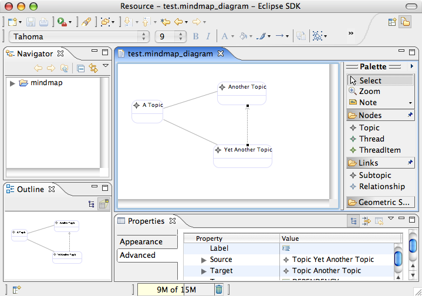
Now, we can regenerate our diagram code as before, launch our diagram workspace and test this new link. Here is an example of the results.
What we will now need to do is initialize the link to be of the proper type (dependency, includes, extends) when created. We will use separate tools for each, and could also opt to use distinct visualization. For now, we'll simply add a label to the link to indicate its type and maintain the dashed line with open arrow appearance for each.
When you create a new element on a diagram, there is typically a domain element created or modified as a result. In some cases, it's necessary to provide additional initialization information to ensure that objects are properly created. For example, the links we create between topics in our mindmap diagram come in three flavors: dependency, includes, and extends. The 'type' attribute of the Relationship class is used to hold the RelationshipType enum value for the new instance.
In our graphical definition, we will create a figure and corresponding link for each type, along with a creation tool for each in our tooling definition. We'll then use a feature sequence initilizer in our mapping definition to properly initialize our domain objects, depending on the type of link created on the diagram.
Another initialization we will perform is to set the 'label' attribute of the Relationship. As we've indicate above, this will serve to distinguish between the types as our visualization will remain the same for each. A viewlet of this section can be found here.
First, we need to add a Label to our graphical definition to use in displaying the relationship type. Add a new Figure Descriptor and Label to our Figure Gallery and name them DashedLineLabelFigure. Right-click on the Canvas and add a new Diagram Label named 'RelationshipLabel' with a Figure assigned to our DashedLineLabelFigure. Set the Element Icon property to 'false'.
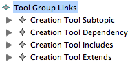
Return to our tooling model and rename the 'Relationship' tool to 'Dependency'. Copy/paste this tool in order to create additional 'Includes' and 'Extends' tools.
In the mapping model, change the tool used by our current Relationship Link Mapping to the 'Extends' tool. After we add the constraint and initializers, we will copy/paste this Link Mapping and change the properties to be used for dependency and extends links. In the end, we will have a single link in our graphical definition being used by 3 tools with corresponding mappings to the same domain element.
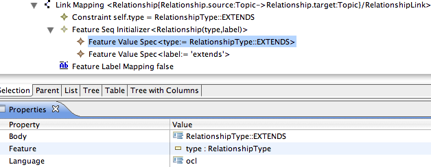
In the mapping model, below your dependency Link Mapping, create a 'Feature Seq Initializer' element. This will hold subsequent 'Feature Value Spec' elements as seen in the figure. OCL is the language we'll use, so be careful that the body expressions you enter are valid. In the case of initializing the enumeration field, you'll enter 'RelationshipType::EXTENDS' to set the 'type : RelationshipType' feature of our Relationship class. In the case of initilizing the 'label : String' feature, you'll enter the string value 'extends' (within single quotes).
In addition to the initializer, we'll need to add a Constraint to the link itself. In fact, whenever you create multiple mappings to a single domain element, you will need to add constraints such that each can be uniquely identified. To the Link Mapping, right-click and add a new Constraint with language set to 'ocl' and a body of 'self.type = RelationshipType::EXTENDS'. Note this is an equality statement (=) and not an assignment (:=).
Lastly, we'll need to provide a new Feature Label Mapping to let the 'label : String' feature of our Relationship domain element be represented by our RelationshipLabel. If you'd like your label to include guillemets, include them in the View Pattern. For example, enter Ç{0}È to have the label text display on the diagram within these double angle brackets (French quotation marks), or whatever you'd prefer.
Copy/paste your Dependency Link Mapping to create an Include and Dependency link mapping, changing their properties as necessary (e.g. 'RelationshipType::INCLUDES' and 'RelationshipType::DEPENDENCY' with corresponding 'includes' and 'depends' body values). Be sure not to forget the tool selection for each as well.
Tip : Keep in mind that the order of the 'Feature Value Spec' elements will determine the order in which they are executed.
With these steps complete, we can regenerate our mindmap.gmfgen and code.
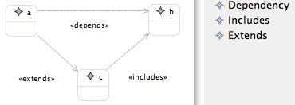
If you launch your runtime instance and test these new initializers, you will find that the type attribute is set according to the Relationship tool selected, and that the label attribute is preset to the names you defined above.
As we saw with the OCL constraint added in the first part of the tutorial, it is possible to restrict connections made between nodes by declaring constraints in our mapping definition. Sometimes, it is more appropriate to validate connections and other aspects of a diagram content using batch or even "live" validation using the Validation framework provided by the EMF project. In this section, we will add such a validation feature to our mindmap in order to alert us of cyclic dependencies that have been created between Topics.
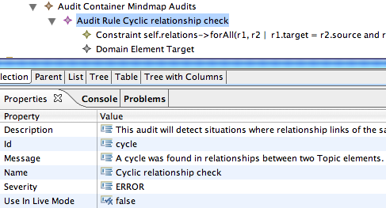
To begin, open the mapping definition (mindmap.gmfmap) and right-click the Mapping node. Select 'New Child... Audit Container' and give it a name (e.g. Mindmap Audits). Assign it an id and description as well. To the container, add a new 'Audit Rule' named 'Cyclic relationship check'. We are going to target the Map class for the audit, so add a child 'Domain Element Target' to the Audit Rule and select 'Map' as the Element. Add a new child 'Constraint' to the Audit Rule and enter the following for the Body, leaving the Language set to ocl.
Tip : When authoring these constraint expressions in OCL, you may find it helpful to contribute an action to open the OCL Interpreter view on instances of your domain model. See the OCL Interpreter Example in the online documentation for more information.
self.relations->forAll(r1, r2 | r1.target = r2.source and r1.type = r2.type implies r2.target <> r1.source)
This will only detect cycles that exist between two directly linked Topic elements, but is sufficient for our purposes here. If someone more OCL-savvy can provide a statement to detect cycles between more than two Topics (if possible), it would be appreciated ;).
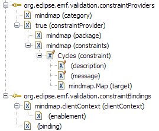
After reproducing the mindmap.gmfgen model, you will need to set the 'Validation Enabled' property of the Gen Diagram element to 'true' in order for the new audit to be run. To view familiar Eclipse decorators on our elements when audits are violated, set the 'Validation Decorators' property to 'true'. Finally, below that property is one called 'Validation Provider Priority' that you should set to 'Medium' (something higher than 'Lowest'). Do this and regenerate your editor code. After doing so, you will notice some new extensions listed in your editor's plugin.xml file. Primarily, you should notice the constraintProviders and constraintBindings extension-points to which your editor contributes. Examine these and take a closer look at the EMF Validation framework if you wish.
An improvement here would be to write validations that identify the offensive element to allow for selection via the problems view. Currently, violations result in the canvas itself being selected, as the context is the Map and not a particular Topic or Relationship. For example, a simple constraint added to our Topic elements would be to verify each has a name. Add such an Audit Rule to our container where the Domain Element is our Topic class and the constraint is 'name.size() > 0'.
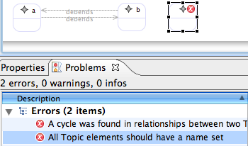
Note : The generated code has a dependency on the EMF Data Integrity Frameworks feature from the Europa update site. It will not be selected automatically when installing GMF, so you will need to explicitly install it to run this part of the tutorial.
To test the new audits, launch your runtime workspace and create a dependency link between two Topic elements. Also, add a Topic and give it no name. Then from the Diagram menu, select 'Validate' and observe the errors in the Problems view, as shown here. To enable/disable the audit, you can find it now listed in the preferences dialog under 'Model Validation'.
In order to share content between diagrams, and indeed between domain model instances, GMF provides the capability to allow shortcuts to be added to diagrams. In order to enable this functionality, you'll need to locate the 'Shortcuts Provided For' and 'Contains Shortcuts To' properties of the Gen Diagram root of your generator model (e.g. mindmap.gmfgen). In order to allow the shortcutting of Mindmap elements, set both of these properties to 'mindmap' and regenerate your editor.
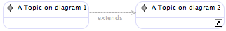
Test the shortcut capability by creating two new Mindmap diagrams and adding elements to each. On the background of one, right-click and select 'Create Shortcut...' to bring up a selection dialog. Browse to the other diagram and select a Topic node to add as a shortcut.
There is understandably no viewlet for this section.
In this section of the tutorial, we saw how to add compartments (including nested nodes), links representing classes, feature initializers, constraints, validation, and shortcuts. The next section of the tutorial will dig deeper and focus on altering generated output and manual extension of the editor, along with adding some polish. See GMF Tutorial Part 3.